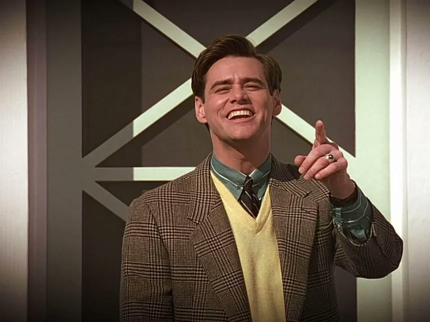
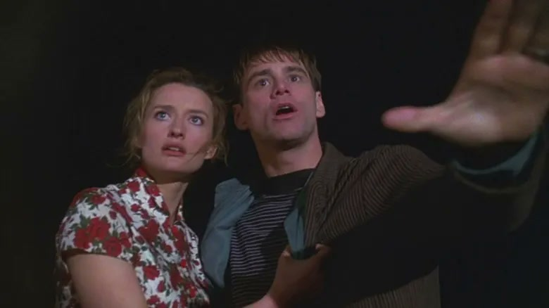
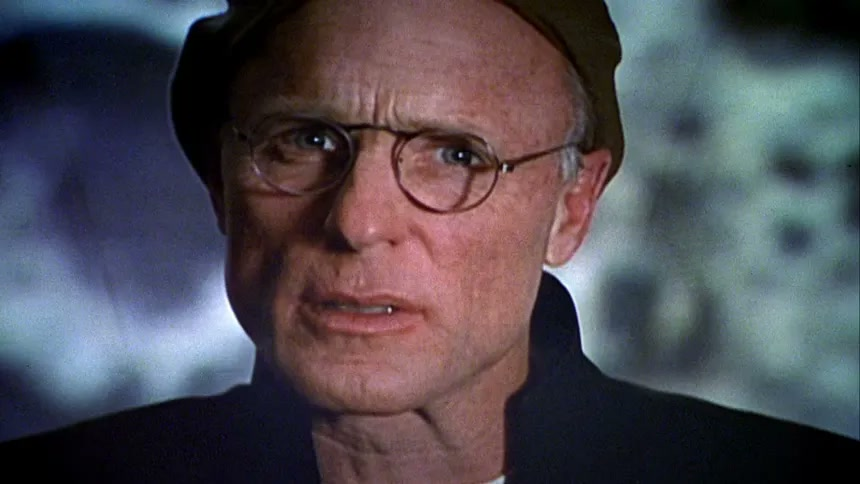
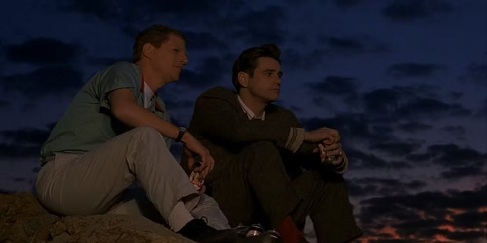
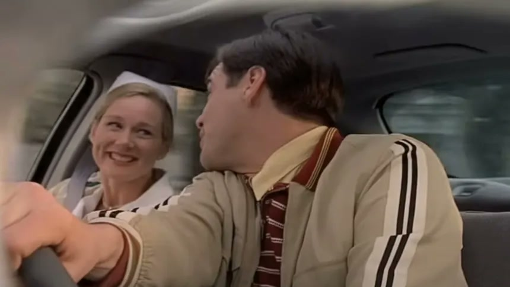
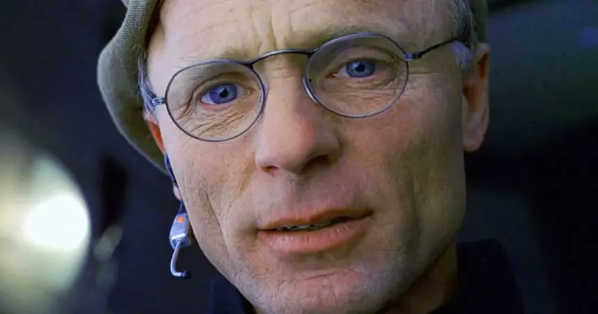
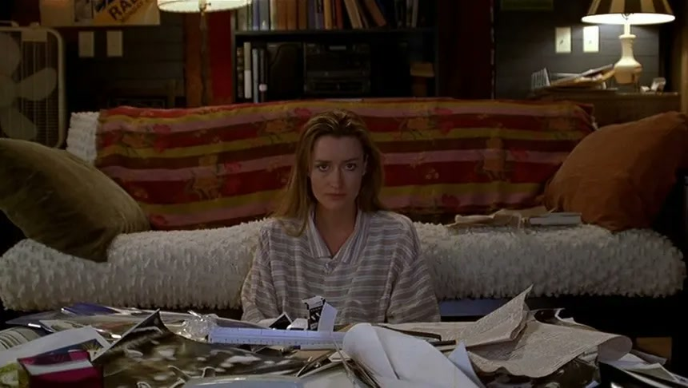

— Good morning, oh and in case I don't see ya, good afternoon, good evening, and good night!

— Good morning, oh and in case I don't see ya, good afternoon, good evening, and good night!

— Sylvia: This, it's fake. It's all for you.
— Truman: I don't understand.
— Sylvia: The sky and sea, everything, it's a set. It's a show. Everybody's watching you. Please don't listen to him. He's going to lie to you. They're watching us now!
— Truman: I really would like to know what's going on.

— Christof, let me ask you, why do you think that Truman has never come close to discovering the true nature of his world until now?
— We accept the reality of the world with which we're presented. It's as simple as that.

— [Emotional, almost to the point of tears] The point is, I would gladly step in front of traffic for you Truman. And the last thing I would ever do to you...
— [Feeding Marlon his lines] ... is lie to you.
— ...is lie to you.

— Truman Burbank: Blocked at every turn. Beautifully synchronized, don't you agree?
— Meryl: You're blaming me for the traffic?
— Truman Burbank: Should I?
— Meryl: Truman, let's go home.
— Truman Burbank: You're right. We could be stuck here for hours. It could be like this all the way to Atlantic City. Let's go back. I'm sorry. I don't know what got into me.
— Meryl: Truman, can you slow down?
— Truman Burbank: Yes, I can.
— Meryl: Truman. Truman, that's our turnoff.
— Truman Burbank: I changed my mind. What's New Orleans like this time of year? Mardi Gras, woooooo! Ha ha ha ha ha! Hoo hoo hoo! Whoooohoo! Look, Meryl! Same road, no cars. It's magic! Hahaha!
— Meryl: You let me out, Truman. You're not right in the head. You want to destroy yourself you do it on your own.
— Truman Burbank: I think I'd like a little company.

— Cristof: We've become bored with watching actors give us phony emotions. We are tired of pyrotechnics and special effects. While the world he inhabits is, in some respects, counterfeit, there's nothing fake about Truman himself. No scripts, no cue cards. It isn't always Shakespeare, but it's genuine. It's a life.
— Truman Burbank: Was nothing real?
— Christof: You were real. That's what made you so good to watch...

— Mike Michaelson: The Hague for Christof. Hello? The Hague? All right, we've lost that call, let's go to Hollywood, California. You're on Trutalk.
— Sylvia: Hi, Christof, I'd just like to say one thing, you're a liar and a manipulator and what you've done to Truman is sick!
— Christof: Well. We remember this voice, don't we? How could we forget?
— Mike Michaelson: Uh, let's go to another call, what do we have...
— Christof: No. No, no, no, no, no, it's fine, it's fine, Mike. I love to reminisce with former members of the cast. Sylvia, as you announced so melodramatically to the world, do you think because you batted your eyes at Truman once, flirted with him, stole a few minutes of airtime with him to thrust yourself and your politics into the limelight, that you know him? That you know what's right for him? You really think you're in a position to judge him?
— Sylvia: What right do you have to take a baby and turn his life into some kind of mockery? Don't you ever feel guilty?
— Christof: I have given Truman the chance to lead a normal life. The world, the place you live in, is the sick place. Seahaven is the way the world should be.
— Sylvia: He's not a performer, he's a prisoner. Look at him, look at what you've done to him!
— Christof: He could leave at any time. If his was more than just a vague ambition, if he was absolutely determined to discover the truth, there's no way we could prevent him. I think what distresses you, really, caller, is that ultimately Truman prefers his cell, as you call it.
— Sylvia: Well, that's where you're wrong. You're so wrong! And he'll prove you wrong!
